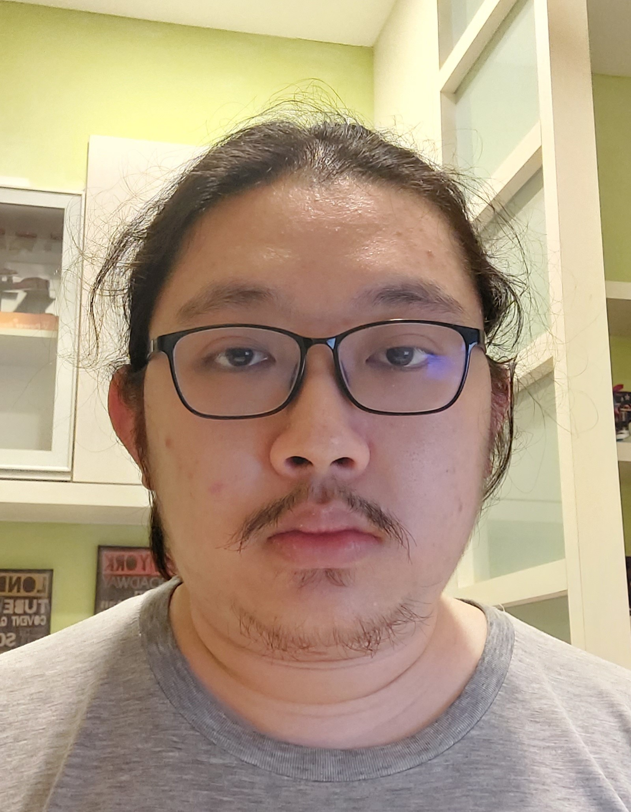

Ng Jun Kit
Computer Science Graduate + Data Curator

Summary
Hi everyone, I am a Computer Science graduate and currently working as a Data Curator
in Veeva under the Mandarin team. I'm from Malaysia and currently I'm relearning Web Development as a hobby
+ for a potential job opportunity.
Education
-
Foundation in Arts (IT)
Segi University (2015-2016)
- Bachelor of Computer Science (Hons) in Computer Security
UOW Malaysia KDU University College (2017 - 2020)
Work Experience
-
Software Tester Intern
Digi Telecommunication (2020)
- Perform testing on software
- Write test cases
- Reporting errors
-
Data Curator
Veeva (2022 - Until Now)
- Compile medical data
- Translate medical information from Chinese to English
Skills
- Web Development
- Python
- SQL
Awards
- Tune Protect Ideathon: 1st Runner Up
Contact Me